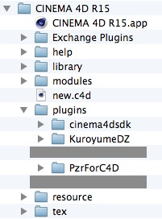
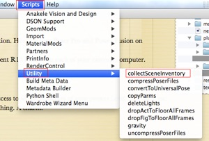

Net Render for C4D with Poser

Target C4D : R15
Target plug-ins : Power Fusion (Poser Pro 2014) and InterPoser Pro
Step 1
Set-up :
Ethernet or Wifi ? - Nowadays wifi is as fast as Ethernet.
Comparing a N-modem Wifi and a 1GB Ethernet - No difference
(at least for a 2 computer network on a small project)
My set-up - on a small project - Team Render C4D R15
a 2.6 GHz Intel Core i7 (8 processors) - Render : 8m27s
The same project adding
a 2.4 GHz Intel Core 2 Duo ( 2 processors) - Render : 6m40s
About 500 sec with 8 processors
About 400 sec with 10 processors
It’s linear (with the above conditions)
Even better as it takes a few seconds for the external machine to access and load the necessary files from the i7 machine. Later I may update these numbers with a bigger project.
So don’t throw away your old laptops. :)
Step 2
The plug-ins have to be at a specific location. Here for InterPoser Pro and Power Fusion on
the main computer.
You need to have the “Team Render Client R15 folder” on each of your external computer.
Step 3
Your external computers need to have access to all the resources of your project (.c4d, .jpg, .pz3, etc)
InterPoser Pro handles completely everything. A charm.
For Power Fusion it’s more tricky.
-
1.Set up a shared drive. It doesn’t seem to work with a shared folder. A few people have spent a lot of time. We couldn’t .
I created a virtual drive using Disk Utility. Using a real physical external drive works as well. Make it “Shared” and
mount it on every of the external computer.
-
2.Use the scene collect script inside Poser to save to the shared drive.
-
3.Create your C4D project and save it on the shared drive. Load the Poser collected .pz3
-
4.In C4D “Save project with Assets” under the File Menu doesn’t seem to be useful. No need.
-
5.Start the “Team Render Client” app on every of your client.
-
6.On the server using “Render>Team Render machines” menu activate each client.
-
7.And finally “Render>Team render to Picture Viewer...”
If you have problems with steps 3.5 and 3.6 and 3.7, send me an e-mail and I’ll explain in more details.

